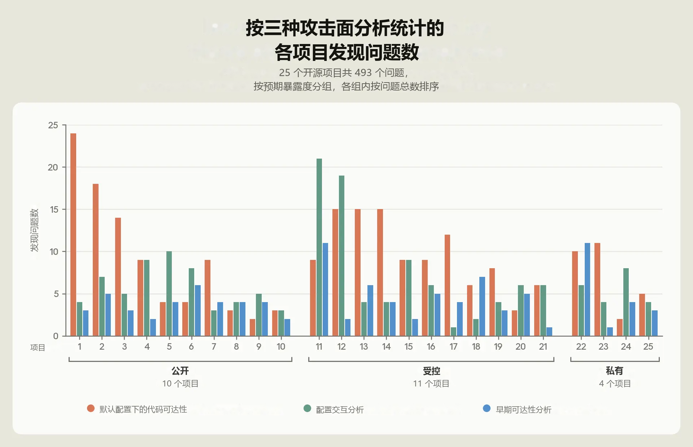
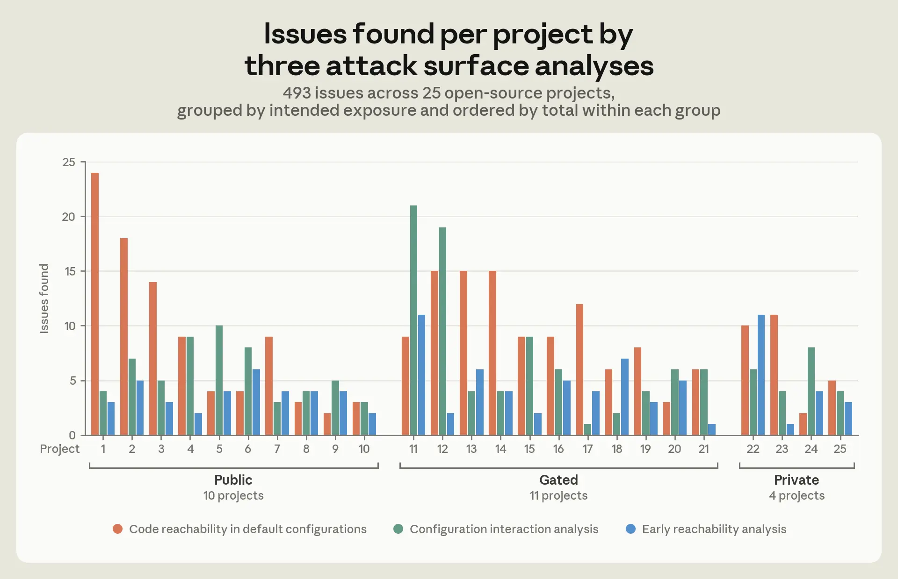

前沿红队（Frontier Red Team） 2026 年 10 月 20 日 已发布 2026 年 10 月 20 日 团队 前沿红队 主题
相关文章 * 前沿红队 2026 年 11 月 2 日 大语言模型可证明推理的进展
查看更多 Chris Rohlf 过去一年里，我们发布了大量数据，表明前沿AI模型完全有能力发现并利用安全漏洞。然而，展示此前未知的漏洞可能如何被利用，只是前沿AI模型能为网络防御所做之事的开端。在这篇文章中，我们概述对自动化攻击面分析与缩减的一些初步研究：即用AI模型梳理出可达的代码，再移除或限制对某个特定部署无需暴露的一切内容的访问。 自动化攻击面分析与缩减能在近期切实提升已部署软件的安全性。仅靠发现并修复单个漏洞来保障软件安全，扩展性很差：即便修复了一个严重漏洞，也无法说明还剩哪些漏洞。相比之下，降低代码可达性可以减轻未知漏洞的危害，包括那些可能正被积极利用的漏洞。这些技术并不移除代码中的未知漏洞，但确实让漏洞更难被触达，从而降低其危害。把代码库的攻击面降到最小，能在根本无需发现或修复任何单个漏洞的情况下带来更好的安全性。 下文我们预览用Claude把攻击面缩减技术应用于大型开源代码库所收集的部分数据。这样做的目的，是表明Claude能通过我们概述的方法，切实且经济地改善软件安全。具体而言，我们在25个项目（使用多种语言）上运行了Claude，它发现了493个问题。结合这些结果，我们讨论开发者如何把类似技术应用到自己的代码上。
随着时间推移，软件往往变得越来越复杂，新的抽象层、新的依赖和新的功能慢慢层层叠加。这常常使它实际的运行方式与最初开发者的设想大相径庭。这也是攻击者往往如此得手的重要原因：他们研究的正是一段代码在实际中的行为，而非开发者打算或设计它如何工作。 自动化攻击面分析与缩减技术旨在发现不必要的攻击面，再把相应代码移到合适的门禁之后。这可能涉及把代码从认证前移到认证后、从0次点击移到1次点击、从默认开启改为显式选择加入，或从协议的第一条消息移到会话状态机更深处。有些代码本就应在这些阶段之前可达，但很多并非如此；而考虑到成千上万乃至数百万行代码反复改动带来的复杂性，功能的不必要暴露常常被忽视。 缩减代码攻击面的方式有很多。在我们的研究工作中，我们特别聚焦三种方法： * 默认配置。我们识别出在出厂默认配置下可达、却并非供任何默认功能使用的代码。 * 配置交互。我们找出单独看合理、但一起配置时引发问题的选项对（例如悄悄禁用某项安全控制，或在代码仍可达的情况下让某功能的行为处于未定义状态）。 * 早期可达性。我们识别出在适当安全控制（如认证）之前运行、无需受害者交互、或在协议状态转换之前运行的安全敏感且复杂的代码。
我们想了解Claude能凭借这三种攻击面描述，在大型复杂代码库中发现真实问题的效果如何。我们分析了25个开源项目（合计超过五百万行代码），使用语言包括C、C++、Java、PHP和Python。Claude为这些项目编制了超过17,000个配置选项的清单，其中3,842个与安全相关的控制或功能的配置有关。 出于研究目的，我们把这些开源项目分为三大类： * 公开（Public）。这类项目用于服务任何能够访问它们的用户，或处理由它们无法识别的一方所编写的数据。（例如解析上游应答的DNS解析器，或解析源站响应的代理。） * 受控（Gated）。这类项目旨在服务已认证的用户（例如持有密码、密钥或证书者，或已注册的设备）。软件仍允许任意客户端请求，但在用户通过认证之前不提供任何功能。 * 私有（Private）。这类项目为服务运营者自身的私有环境而构建和部署。在这种情况下，添加认证层之类的控制是可选的，但不在软件的范围之内。
这些类别有助于理解我们的结果。例如，我们预期公开（Public）代码库有相当比例在默认配置下可达（因为它本就为服务任意用户而设计），而受控（Gated）类项目则恰恰相反。
Claude用上述三种方法发现了493个问题。其结果中有几个主题格外突出。 首先，Claude发现全部11个受控项目都存在无意间可达的代码（尽管在任何一个项目中，这些代码占总代码行的比例都不高）。具体地说，Claude在受控组的默认配置中发现了93处不必要的认证前攻击面、37处在认证之前就执行代码或记录状态的位置，以及61种悄悄削弱管理员所配置认证前控制的配置组合。这些问题单独看都不会被立即利用，但它们造成的攻击面远超必要。

按类别和每种技术划分的已发现问题明细。在我们评估的25个项目中，10个为公开（Public）、11个为受控（Gated）、4个为私有（Private）。受控组的结果最出人意料，早期可达性发现数量很高。 其次，Claude在缓解配置交互问题方面的工作产出了一些最有趣、最具影响力的发现（涵盖所有项目类型）。Claude发现162种安全敏感的配置组合，它们既被接受而不报任何错误或警告，也没有任何文档说明其交互的预期行为。其中94种情况下，该组合会悄悄关闭某项安全控制。其余68种是同一安全机制内部的不一致（例如配置明明写着已禁用，某个监听器或登录路径却仍保持可达；两个设置相互冲突，而哪个生效取决于它们在配置文件中的顺序；或者管理员配置的某项保护毫无作用，其代码却仍可达）。虽然其中一些配置组合可能并不标准或不常用，但没有任何东西能阻止这些项目的管理员以这种方式配置并部署代码。 Claude还发现一种特定模式，在四个互不相关的项目中独立出现。其运作方式如下：管理员用主机名或通配符模式（而非IP地址）为远程客户端编写访问规则。客户端连接时，服务器会拿该规则与客户端的主机名比对。服务器能否得知该主机名，取决于另一个控制反向DNS查询的选项（多数项目默认将其关闭）。查询关闭时，服务器只有客户端的IP地址，于是把规则当作纯文本与该地址比对。但主机名模式永远无法匹配IP地址。这意味着拒绝规则永不触发，名单会失效开放。部分受影响项目在文档中提到主机名规则依赖启用DNS查询，但没有一个说明以这种方式编写的拒绝名单会出现失效开放行为。 第三，Claude常常发现两个配置选项以悄悄丢弃某项安全检查的方式相互冲突。在一种情况下，管理员可以要求每个连接的客户端用证书证明身份；在另一种情况下，代码本意只是把该检查推迟到需要时才做，实际上却把检查完全禁用了。于是，一台被配置为只接受可信客户端的服务器，会接受来自任何人的连接。这把大量请求处理代码（本应位于证书检查之后）暴露给未经认证的客户端。软件在默认设置下同时接受这两个配置选项而不发出任何警告；文档也从未提及证书要求已被丢弃。这组相互冲突的配置选项已在该软件中存在了21年。 最后，Claude在一个默认关闭认证（并期望管理员自行开启）的项目中发现了一个问题。要求TLS客户端证书的该选项在项目大多数网络端点上得到遵守，却在少数端点上被悄悄忽略（这些端点通过命名空间不同的路径加载TLS设置）。这意味着没有证书的客户端也能完成TLS握手，并在受影响的端点上开启会话。被忽略的设置不会被记录任何日志。该选项是否生效，取决于管理员在配置中使用的命名空间。设置名称的一种形式在所有端点上都有效，但多数示例使用的较短形式，在受影响的端点上会被丢弃。出人意料的是，若以占总代码行的比例来衡量，Claude实现攻击面缩减幅度最大的项目是OpenSSH。OpenSSH是一个提供安全远程访问的高质量C代码库。Claude追踪了10.4版本中SSH守护进程的输入路径，发现约4,500行用于ML-DSA-44（一种后量子签名算法）的新增实验性代码，未经认证的客户端在默认配置下即可触达。ML-DSA默认并未启用，但即便管理员显式排除了该算法，这些代码仍然可达。守护进程会解析客户端发送的任何密钥类型（对证书还会验证其中嵌入的CA签名），之后才检查该密钥类型是否被允许。当配置尚未启用这些复杂、内存不安全的代码时，没有充分理由让它们保持可达。ML-DSA-44的这4,500行代码约占默认sshd中OpenSSH自身认证前代码的16%。我们连同补丁把此事报告给OpenSSH开发者。10.5版本把检查移到了解析之前。 Claude随后指出10.5版本检查中的两处疏漏。第一处是客户端声明的内容与实际发送的内容不一致：检查看的是客户端通告的算法名称，但解析器却由密钥数据块内嵌的类型字符串决定。客户端可以通告ssh-ed25519、通过检查，却仍发送一个会被解析的ML-DSA密钥。 第二处疏漏在10.5版本检查的证书处理上。证书密钥类型默认启用。给定攻击者提供的证书，sshd会反序列化其中嵌入的CA公钥，并在查阅配置之前，用它对任何受支持的算法执行完整的签名验证。用户密钥签名路径被妥善地置于允许连接服务器的公钥列表这一门禁之后，CA签名路径却没有。这使得二进制文件中每一个公钥签名验证器，都能被任何可完成密钥交换的客户端触达。我们构建了概念验证，并与维护者一起反复迭代修复方案。最终改动把检查放进解析器内部：编码的密钥类型与证书的CA签名算法，如今都会在相应的反序列化或签名验证_之前_与配置好的允许列表比对。 这一修复移除了在默认构建中未经认证客户端此前可触达的约五分之一OpenSSH代码。其中几乎全部是新增的ML-DSA代码，如今即便客户端谎报密钥类型、或把ML-DSA的CA密钥藏在其他方面合格的证书里，也无法触达。由允许的CA算法签名的证书仍会被解析和验证，但检查如今在解析_之前_运行。维护者在10.6版本中发布了本文所述的改动。 OpenSSH是世界上审计最充分的代码之一。如果不必要的可达性在这里都能留存，那它在任何地方都可能留存。这表明，缩减代码库的攻击面很可能会在许多重要代码库上带来回报。
要衡量任一给定代码库中有多少未知漏洞，或许是不可能的。大量数据表明，只要时间充足，攻击者能够也终将找到这些漏洞（尤其当他们配备前沿AI模型时）。但是，防御者只要缩减代码中不必要的攻击面，就能一次性降低该代码中所有未知漏洞带来的风险——包括任何已在被悄悄利用的漏洞。OpenSSH是世界上审计最充分的C代码之一，然而它曾附带约4,500行实验性签名解析代码，攻击者在进行任何配置检查之前就能触达。 我们已把上述攻击面缩减技术整合成一个可复用的Claude技能，正努力把它集成到OSS-Scanner中。该技能对代码库运行三遍。每一遍都从空白开始（上下文窗口为空），只接收上一遍传来的一小段上下文。 第一遍，技能查看是否存在默认配置允许触达、却未被任何预期功能使用的代码。第二遍，它查看在任何配置下、于任何硬门禁（如认证）之前或协议状态机入口点之前运行的代码。第三遍即最后，技能评估哪些配置组合会悄悄关闭某项安全控制或削弱其效力。每一遍中，Claude都会从代码建立入口点清单，并用程序的动态执行轨迹确认每一项发现。对默认配置类发现，它会设计并实现一个门禁，并确保这不改变程序的默认行为：做法是拿项目自身的测试套件（连同黑盒回归套件）针对基线运行，要求改动后的构建结果完全一致。任何会改变非默认配置的门禁都搁置交由人工决定。对另外两遍，它提出诸如重排配置检查、添加护栏以强制状态顺序、或在配置加载时拒绝该组合之类的改动。即便不使用这个特定技能，我们认为本文概述的整体方法论也很可能有效。 本文概述的技术只展现了攻击面缩减可能性中极为有限的一角。例如，Claude还能够分析运行时日志并与配置比对，以确保只启用了所需功能：禁用未使用的解析器、遗留协议和仪表板，能以很低的成本降低安全风险。 我们鼓励各机构探索用Claude分析并缩减其所依赖软件的攻击面。我们预期，这将成为开发者可显著改善全世界已在运行的代码安全性的最实用途径之一。
Published Oct 20, 2026 Team Frontier Red Team Topics
Related articles * Frontier Red Team Nov 2, 2026 Progress on provable inference for large language models
View more Chris Rohlf Over the past year, we’ve published lots of data that shows that frontier AI models are more than capable of discovering and exploiting security vulnerabilities. Showing how previously unknown vulnerabilities might be exploited is, however, only the start of what frontier AI models can do for cyber defense. In this post, we summarize some of our initial research into automated attack surface analysis and reduction: the process of using AI models to map the code that is reachable, then removing or restricting access to anything than a given deployment doesn’t need to expose. Automated attack surface analysis and reduction can meaningfully improve the security of deployed software in the near term. Securing software by finding and fixing individual vulnerabilities alone scales poorly: fixing even a critical vulnerability tells you nothing about the vulnerabilities that remain. By contrast, reducing code reachability can reduce the severity of unknown vulnerabilities, including the ones that might be under active exploitation. These techniques don’t remove the unknown vulnerabilities in the code, but they do make the vulnerabilities harder to reach, and thereby reduce their severity. Minimizing codebases’ attack surface results in better security without ever having to find or fix an individual vulnerability. Below, we preview some of the data we’ve collected from applying attack surface reduction techniques to large open-source codebases using Claude. Our aim in doing so is to show that Claude can meaningfully, and economically, improve software security through the methods we outline. Specifically, we ran Claude over 25 projects (in a variety of languages), and it discovered 493 issues. With these results in mind, we discuss how developers can apply similar techniques to their own code.
Over time, software has a tendency to become more complicated, with new layers of abstractions, new dependencies, and new features slowly piling on top of one-another. This can often cause it to function very differently to how its original developers intended. And it is a big part of why attackers are often so successful: they study exactly how a piece of code behaves in practice, rather than how its developers intended or designed it to work. Automated attack surface analysis and reduction techniques aim to discover unnecessary attack surfaces, then move that code behind an appropriate gate. This might involve moving code from pre-authentication to post-authentication, from 0-click to 1-click, from on-by-default to explicit opt-in, or from the first message of a protocol to deeper in the session state machine. Some code is meant to be reachable before these stages, but a lot it is not, and, given the complexity that comes with code churn across thousands or millions of lines of code, unnecessary exposure of features often goes unnoticed. There are numerous ways to reduce the attack surface of code. In our own research efforts, we focused on three methods in particular: * Default configuration. We identified code that was reachable in its shipped default configuration but wasn’t intended to be used by any default functionality. * Configuration interaction. We found pairs of options that looked reasonable on their own, but which caused issues when configured together (for instance, by silently disabling a security control, or leaving a features behavior undefined while its code remains reachable). * Early reachability. We identified security sensitive and complex code that runs either before an appropriate security control (such as authentication), without victim interaction, or before a protocol state transition.
We wanted to understand how well Claude could take these three descriptions of attack surface and discover real issues in large and complex codebases. We analyzed 25 open source projects (representing over five million lines of code), written in languages including C, C++, Java, PHP, and Python. Claude created an inventory of over 17,000 configuration options across these projects. Of those, 3,842 related to the configuration of a control or feature that was security relevant. For the purposes of our research, we broke down these open source projects into three broad categories: * Public. These projects are built to serve any user who can reach them, or to consume data authored by parties they cannot identify. (Examples include a DNS resolver parsing upstream answers, or a proxy parsing origin responses.) * Gated. These projects are intended to serve authenticated users (such as those with a password, key or certificate holders, or enrolled devices). The software still allows for arbitrary client requests, but no functionality is available until the user has been authenticated. * Private. These are built and deployed to serve the operator's own private environment. In these cases, adding a control like an authentication layer is optional, but outside the scope of the software.
These categories help to contextualize our results. For example, we’d expect a significant percentage of a Public codebase to be reachable in the default configuration (since it’s designed to serve any user), but the opposite to be true for projects in the Gated category.
Claude found 493 issues using the three methods described above. Several themes stuck out to us from its results. First, Claude found that all eleven gated projects had code that was unintentionally reachable (although this code wasn’t a significant percentage of the total lines of code for any of those projects). Specifically, Claude discovered 93 unnecessary pre-authentication surfaces in the default configuration of the gated cohort, 37 locations where code executed, or state was recorded, before authentication, and 61 configuration combinations that silently weakened a pre-authentication control configured by the administrator. None of these issues would have been immediately exploitable on their own, but they create a much larger attack surface than is necessary.

A breakdown of issues discovered per category for each technique. Of the 25 projects we assessed, 10 were Public, 11 Gated, and 4 Private. The Gated cohort contained the most surprising results with a high number of early reachability findings. Second, Claude’s work mitigating configuration interaction issues produced some of the most interesting and impactful findings (across all project types). Claude found 162 security sensitive configuration combinations that were accepted both without an error or warning and without any documentation of the expected behavior of their interaction. In 94 of those cases, the combination silently turned off a security control. The other 68 cases were inconsistencies in the same security mechanisms (e.g. a listener or login path would remain reachable even though the configuration would say it was disabled; two settings would conflict, and the one that would take precedence would depend on their order in the configuration file, or a protection configured by the administrator would do nothing while its code remained reachable). While some of these configuration combinations might be non-standard or infrequently used, there would be nothing preventing an administrator of these projects from configuring and deploying the code in this way. Claude also found one specific pattern that turned up independently in four unrelated projects. This would work as follows. An administrator would write an access rule for remote clients using a hostname or a wildcard pattern, instead of an IP address. When a client connects, the server would compare that rule against the client’s hostname. Whether the server ever learned that hostname would depend on a separate option that controlled reverse DNS lookups (which most projects had configured off). With lookups off, the server would only have the client’s IP address. The server would compare the rule against that address as plain text. But a hostname pattern can never match an IP address. This means that a deny rule would never fire, and the list would fail open. Some of the affected projects mention in their documentation that hostname rules depend on DNS lookups being enabled, but none state that a deny list written this way would have fail open behavior. Third, Claude often discovered that two configuration options would conflict in a way that silently dropped a security check. In one case, an administrator could require every connecting client to prove its identity with a certificate. In another, the code was only intended to delay that check until it was required, but in fact disabled the check entirely. A server that was configured to accept only trusted clients would therefore accept a connection from anyone. This exposed a large body of request handling code (which was supposed to be behind the certificate check) to unauthenticated clients. The software accepted both configuration options together with no warning under default settings; the documentation never mentioned that the certificate requirement had been dropped. This conflicting set of configuration options had been present in the software for 21 years. Finally, Claude discovered an issue in a project that left authentication off by default (and expected the administrator to turn it on). The option that required TLS client certificates was honored on most of the project’s network endpoints, but silently ignored on a few others (ones which loaded their TLS settings through a path with a different namespace). This meant that a client with no certificate could complete the TLS handshake and open a session on an affected endpoint. Nothing would be logged about the ignored setting. Whether the option takes effect would depend on the namespace used by the administrator in the configuration. One form of the setting name works on every endpoint, but the shorter form—which most examples use—is dropped on the affected ones.Surprisingly, when measured as a percentage of the total lines of code, the project for which Claude achieved the largest reduction in attack surface was OpenSSH. OpenSSH is a high quality C codebase that provides secure remote access. Claude traced the input paths of the SSH daemon in the 10.4 release and found roughly 4,500 lines of new and experimental code for ML-DSA-44, a post-quantum signature algorithm, that an unauthenticated client could reach in the default configuration. ML-DSA is not enabled by default, but the code was reachable regardless, even when an administrator explicitly excluded the algorithm. The daemon parsed whichever key type the client sent, (and, for certificates, it also verified the embedded CA signature). Only then did it check whether that key type was allowed. There is no good reason for this complex, memory unsafe code to be reachable when it hasn’t been enabled by the configuration. Those 4,500 lines of code in ML-DSA-44 are about 16% of OpenSSH’s own pre-authentication code in a default sshd. We reported this to the OpenSSH developers along with patches. The 10.5 release moved the check before parsing. Claude then noted two gaps in the 10.5 check. The first was a mismatch between what the client claimed and what it sent. The check looked at the algorithm name advertised by the client, but the parser was chosen by a type string embedded inside the key blob. A client could advertise ssh-ed25519, pass the check, and still send an ML-DSA key that would be parsed. The second gap was in the 10.5 check’s certificates. Certificate key types were enabled by default. Given a certificate supplied by an attacker, sshd would deserialize the embedded CA public key and run a full signature verification with it, for any supported algorithm, before consulting the configuration. The user key signature path was properly gated behind the list of public keys allowed to connect to the server, but the CA signature path was not. That made every public key signature verifier in the binary reachable by any client that could complete a key exchange. We built a proof of concept and worked through several iterations of a fix with the maintainers. The resulting change placed the checks inside the parser itself. The encoded key type and the certificate’s CA signature algorithm are now compared against the configured allow lists before the corresponding deserialization or signature verification. This fix removed roughly a fifth of the OpenSSH code that an unauthenticated client previously could have reached in a default build. Almost all of that was the new ML-DSA code, which is now unreachable even for a client that lies about its key type or hides an ML-DSA CA key inside an otherwise acceptable certificate. Certificates signed with an allowed CA algorithm are still parsed and verified, but the check now runs before parsing. The maintainers shipped the changes described here in version 10.6. OpenSSH is some of the most heavily audited code in the world. If unnecessary reachability survives there, it can survive anywhere. This suggests that reducing the attack surface of codebases is likely to pay dividends across many important codebases.
It is perhaps impossible to measure how many unknown vulnerabilities are in any given codebase. And there is plenty of data that shows attackers can and will find those vulnerabilities with enough time (particularly if equipped with frontier AI models). But a defender who reduces unnecessary attack surface in their code reduces the risk from all of the unknown vulnerabilities in that code at once—including any that are already being quietly exploited. OpenSSH is some of the most audited C code in the world. Yet it shipped around 4,500 lines of experimental signature parsing code that could have been reached by an attacker prior to any configuration check. We have combined the attack surface reduction techniques we described above into one reusable Claude skill, which we are working to integrate into OSS-Scanner. The skill runs three passes on a codebase. Each time it starts fresh (with an empty context window), except for a short piece of context it receives from the prior pass. In the first pass, the skill looks at whether there is code that the default configuration allows to be reached but which isn’t used by any intended functionality. In the second pass, it looks at the code that runs before any hard gates (like authentication) or before protocol state machine entry points, in any configuration. Finally, third, the skill assesses which combinations of configurations silently switch a security control off or degrade its efficacy. In every pass, Claude creates an inventory of the entry points from the code and confirms each finding with a dynamic trace of the program. For default configuration findings, it designs and implements a gate and ensures that this causes no change in the program’s default behavior. It does so by running the project's own test suite (along with a black box regression suite) against the baseline; it requires modified builds to have identical results. Any gate that would change a non-default configuration is set aside for a human to decide. For the other two passes, it proposes changes like reordering a configuration check, adding a guard to enforce state ordering, or rejecting the combination at configuration load. Even without using this specific skill, we think the broad methodology outlined here is likely to be effective. The techniques outlined in this post offer only a very limited view into what is possible in attack surface reduction. For instance, Claude is also capable of analyzing and comparing runtime logs against configurations to ensure that only required functionality has been enabled: disabling unused parsers, legacy protocols, and dashboards reduces security risk at little cost. We encourage organizations to explore using Claude to analyze and reduce the attack surface of the software they depend on. We expect this to be one of the most practical ways that developers can measurably improve the security of the code the world already runs on.